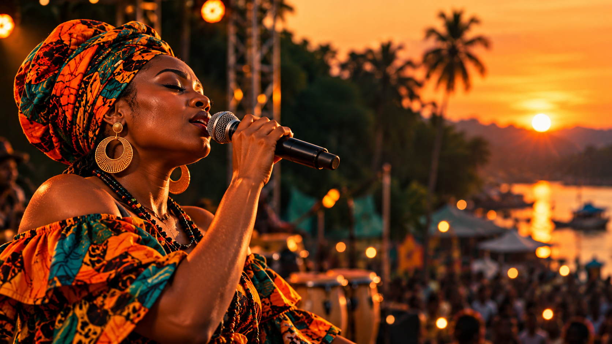
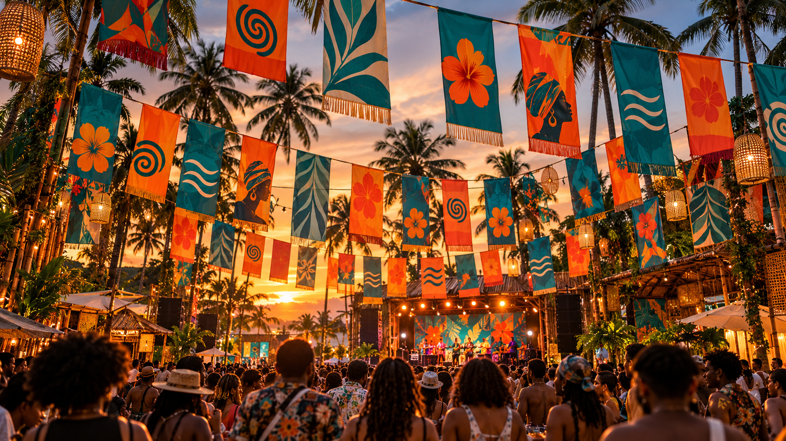
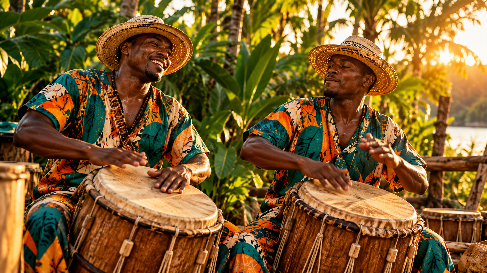
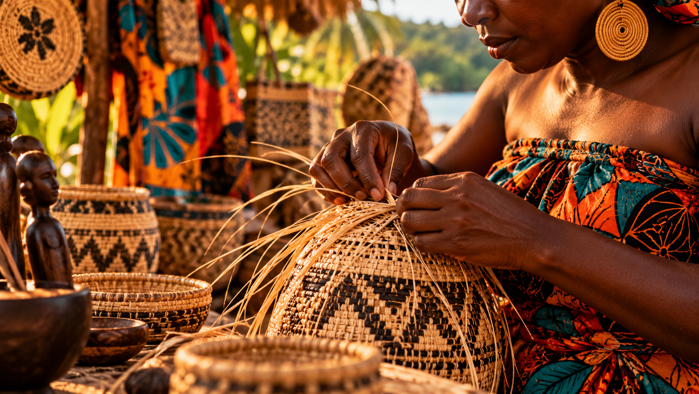
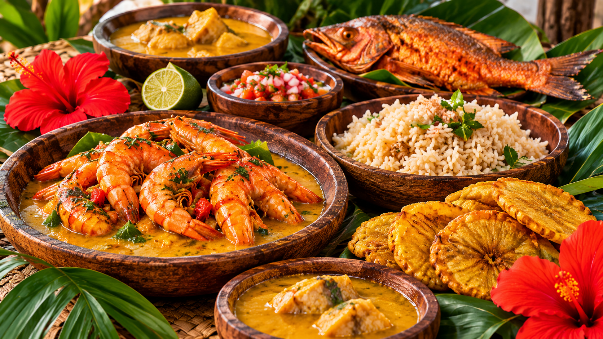
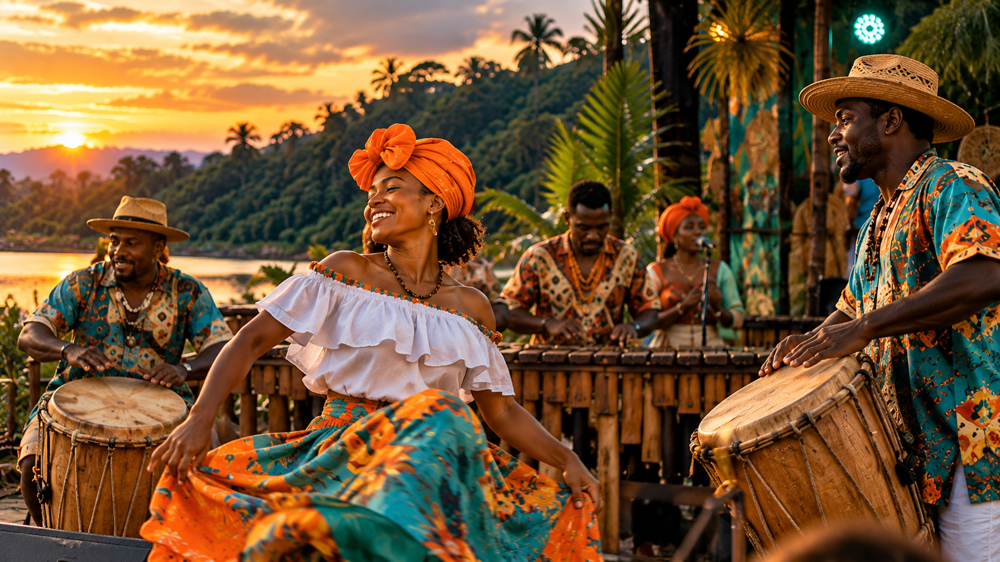

MÚSICA
Voces del Pacífico
Una celebración de voces, canciones y sonidos que cuentan historias del territorio.
 Planifica tu visita →
Planifica tu visita →

MÁREA · QUIBDÓ, CHOCÓ
Dos días para disfrutar de la música, el arte y las expresiones culturales del Pacífico colombiano.
Conoce la agenda ↓14 Y 15 DE NOVIEMBRE DE 2026
MÁREA reúne distintas expresiones artísticas y culturales en un espacio para compartir, aprender y celebrar nuestras raíces.
SÁBADO 14 DE NOVIEMBRE
Música, tradición y saberes que representan la riqueza cultural del Pacífico.

MÚSICA
Una celebración de voces, canciones y sonidos que cuentan historias del territorio.

RITMO
Ritmos tradicionales y percusión para disfrutar de la música y el movimiento.

TRADICIÓN
Un espacio para conocer las prácticas, los conocimientos y las tradiciones de las comunidades.
DOMINGO 15 DE NOVIEMBRE
Arte, gastronomía y encuentros para cerrar el festival celebrando la identidad del territorio.
ARTE
Actividades creativas y expresiones visuales inspiradas en la cultura del Pacífico.

GASTRONOMÍA
Una oportunidad para acercarse a los sabores y las tradiciones de la cocina local.

CELEBRACIÓN
Un cierre para compartir la música, la alegría y el orgullo por nuestras raíces.
Las actividades presentadas corresponden a la propuesta académica del festival. Los horarios y los nombres específicos de los artistas se podrán incorporar cuando se definan oficialmente.